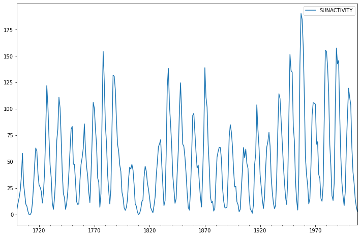
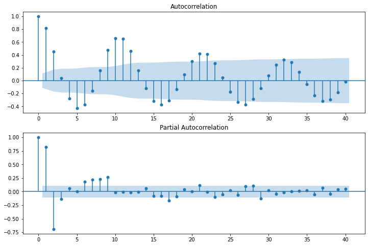
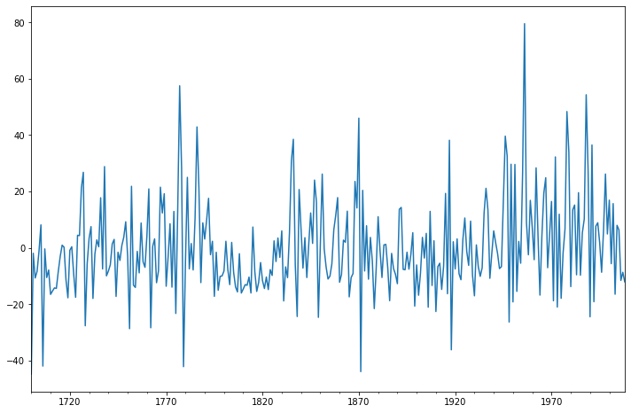
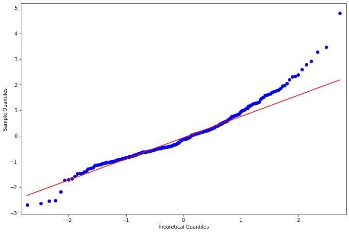
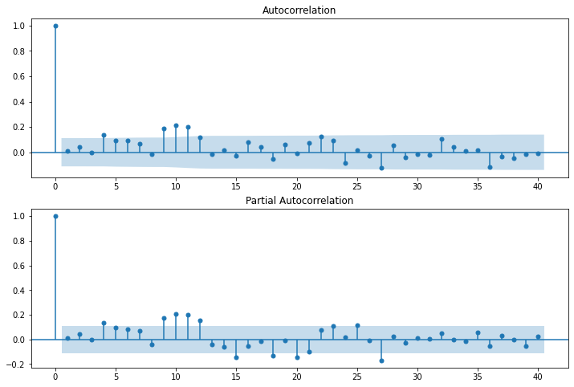
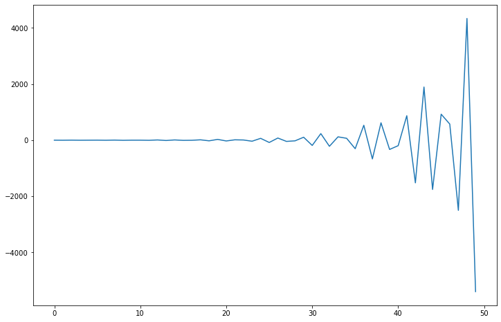
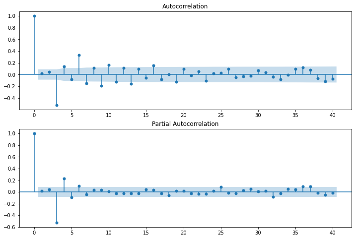
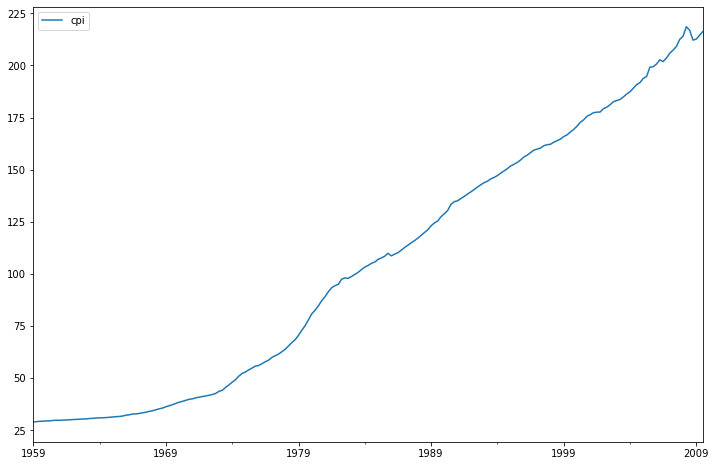

Autoregressive Moving Average (ARMA): Sunspots data¶
[1]:
%matplotlib inline
[2]:
import numpy as np
from scipy import stats
import pandas as pd
import matplotlib.pyplot as plt
import statsmodels.api as sm
from statsmodels.tsa.arima.model import ARIMA
[3]:
from statsmodels.graphics.api import qqplot
Sunspots Data¶
[4]:
print(sm.datasets.sunspots.NOTE)
::
Number of Observations - 309 (Annual 1700 - 2008)
Number of Variables - 1
Variable name definitions::
SUNACTIVITY - Number of sunspots for each year
The data file contains a 'YEAR' variable that is not returned by load.
[5]:
dta = sm.datasets.sunspots.load_pandas().data
[6]:
dta.index = pd.Index(sm.tsa.datetools.dates_from_range('1700', '2008'))
del dta["YEAR"]
[7]:
dta.plot(figsize=(12,8));
[7]:
<AxesSubplot:>

[8]:
fig = plt.figure(figsize=(12,8))
ax1 = fig.add_subplot(211)
fig = sm.graphics.tsa.plot_acf(dta.values.squeeze(), lags=40, ax=ax1)
ax2 = fig.add_subplot(212)
fig = sm.graphics.tsa.plot_pacf(dta, lags=40, ax=ax2)

[9]:
arma_mod20 = ARIMA(dta, order=(2, 0, 0)).fit()
print(arma_mod20.params)
/home/travis/build/statsmodels/statsmodels/statsmodels/tsa/base/tsa_model.py:527: ValueWarning: No frequency information was provided, so inferred frequency A-DEC will be used.
% freq, ValueWarning)
/home/travis/build/statsmodels/statsmodels/statsmodels/tsa/base/tsa_model.py:527: ValueWarning: No frequency information was provided, so inferred frequency A-DEC will be used.
% freq, ValueWarning)
/home/travis/build/statsmodels/statsmodels/statsmodels/tsa/base/tsa_model.py:527: ValueWarning: No frequency information was provided, so inferred frequency A-DEC will be used.
% freq, ValueWarning)
const 49.746198
ar.L1 1.390633
ar.L2 -0.688573
sigma2 274.727182
dtype: float64
[10]:
arma_mod30 = ARIMA(dta, order=(3, 0, 0)).fit()
/home/travis/build/statsmodels/statsmodels/statsmodels/tsa/base/tsa_model.py:527: ValueWarning: No frequency information was provided, so inferred frequency A-DEC will be used.
% freq, ValueWarning)
/home/travis/build/statsmodels/statsmodels/statsmodels/tsa/base/tsa_model.py:527: ValueWarning: No frequency information was provided, so inferred frequency A-DEC will be used.
% freq, ValueWarning)
/home/travis/build/statsmodels/statsmodels/statsmodels/tsa/base/tsa_model.py:527: ValueWarning: No frequency information was provided, so inferred frequency A-DEC will be used.
% freq, ValueWarning)
[11]:
print(arma_mod20.aic, arma_mod20.bic, arma_mod20.hqic)
2622.637093301343 2637.570458408934 2628.607481146589
[12]:
print(arma_mod30.params)
const 49.751911
ar.L1 1.300818
ar.L2 -0.508102
ar.L3 -0.129644
sigma2 270.101140
dtype: float64
[13]:
print(arma_mod30.aic, arma_mod30.bic, arma_mod30.hqic)
2619.4036292456494 2638.0703356301383 2626.866614052207
Does our model obey the theory?
[14]:
sm.stats.durbin_watson(arma_mod30.resid.values)
[14]:
1.9564953613122156
[15]:
fig = plt.figure(figsize=(12,8))
ax = fig.add_subplot(111)
ax = arma_mod30.resid.plot(ax=ax);

[16]:
resid = arma_mod30.resid
[17]:
stats.normaltest(resid)
[17]:
NormaltestResult(statistic=49.843932217643335, pvalue=1.5015079664870237e-11)
[18]:
fig = plt.figure(figsize=(12,8))
ax = fig.add_subplot(111)
fig = qqplot(resid, line='q', ax=ax, fit=True)

[19]:
fig = plt.figure(figsize=(12,8))
ax1 = fig.add_subplot(211)
fig = sm.graphics.tsa.plot_acf(resid.values.squeeze(), lags=40, ax=ax1)
ax2 = fig.add_subplot(212)
fig = sm.graphics.tsa.plot_pacf(resid, lags=40, ax=ax2)

[20]:
r,q,p = sm.tsa.acf(resid.values.squeeze(), fft=True, qstat=True)
data = np.c_[range(1,41), r[1:], q, p]
table = pd.DataFrame(data, columns=['lag', "AC", "Q", "Prob(>Q)"])
print(table.set_index('lag'))
AC Q Prob(>Q)
lag
1.0 0.009170 0.026239 8.713184e-01
2.0 0.041793 0.572982 7.508939e-01
3.0 -0.001338 0.573544 9.024612e-01
4.0 0.136086 6.408642 1.706385e-01
5.0 0.092465 9.111351 1.047043e-01
6.0 0.091947 11.792661 6.675737e-02
7.0 0.068747 13.296552 6.520425e-02
8.0 -0.015022 13.368601 9.978086e-02
9.0 0.187590 24.641072 3.394963e-03
10.0 0.213715 39.320758 2.230588e-05
11.0 0.201079 52.359565 2.346490e-07
12.0 0.117180 56.802479 8.580351e-08
13.0 -0.014057 56.866630 1.895209e-07
14.0 0.015398 56.943864 4.000370e-07
15.0 -0.024969 57.147642 7.746546e-07
16.0 0.080916 59.295052 6.876728e-07
17.0 0.041138 59.852008 1.111674e-06
18.0 -0.052022 60.745723 1.549418e-06
19.0 0.062496 62.040010 1.832778e-06
20.0 -0.010303 62.075305 3.383285e-06
21.0 0.074453 63.924941 3.195540e-06
22.0 0.124954 69.152954 8.984238e-07
23.0 0.093162 72.069214 5.803579e-07
24.0 -0.082152 74.344911 4.716006e-07
25.0 0.015696 74.428271 8.294197e-07
26.0 -0.025037 74.641127 1.368121e-06
27.0 -0.125862 80.039434 3.724792e-07
28.0 0.053227 81.008321 4.718979e-07
29.0 -0.038693 81.522151 6.920524e-07
30.0 -0.016903 81.620562 1.152301e-06
31.0 -0.019297 81.749282 1.869783e-06
32.0 0.104990 85.573436 8.932762e-07
33.0 0.040086 86.132924 1.248176e-06
34.0 0.008829 86.160166 2.048904e-06
35.0 0.014589 86.234809 3.265491e-06
36.0 -0.119329 91.247280 1.085015e-06
37.0 -0.036664 91.722221 1.522712e-06
38.0 -0.046193 92.478877 1.939724e-06
39.0 -0.017768 92.591238 2.992188e-06
40.0 -0.006220 92.605057 4.699318e-06
/home/travis/build/statsmodels/statsmodels/statsmodels/tsa/stattools.py:662: FutureWarning: The default number of lags is changing from 40 tomin(int(10 * np.log10(nobs)), nobs - 1) after 0.12is released. Set the number of lags to an integer to silence this warning.
FutureWarning,
This indicates a lack of fit.
In-sample dynamic prediction. How good does our model do?
[21]:
predict_sunspots = arma_mod30.predict('1990', '2012', dynamic=True)
print(predict_sunspots)
1990-12-31 167.048337
1991-12-31 140.995022
1992-12-31 94.862115
1993-12-31 46.864439
1994-12-31 11.246106
1995-12-31 -4.718265
1996-12-31 -1.164628
1997-12-31 16.187246
1998-12-31 39.022948
1999-12-31 59.450799
2000-12-31 72.171269
2001-12-31 75.378329
2002-12-31 70.438480
2003-12-31 60.733987
2004-12-31 50.204383
2005-12-31 42.078584
2006-12-31 38.116648
2007-12-31 38.456730
2008-12-31 41.965644
2009-12-31 46.870948
2010-12-31 51.424877
2011-12-31 54.401403
2012-12-31 55.323515
Freq: A-DEC, Name: predicted_mean, dtype: float64
[22]:
def mean_forecast_err(y, yhat):
return y.sub(yhat).mean()
[23]:
mean_forecast_err(dta.SUNACTIVITY, predict_sunspots)
[23]:
5.634832993585241
Exercise: Can you obtain a better fit for the Sunspots model? (Hint: sm.tsa.AR has a method select_order)¶
Simulated ARMA(4,1): Model Identification is Difficult¶
[24]:
from statsmodels.tsa.arima_process import ArmaProcess
[25]:
np.random.seed(1234)
# include zero-th lag
arparams = np.array([1, .75, -.65, -.55, .9])
maparams = np.array([1, .65])
Let’s make sure this model is estimable.
[26]:
arma_t = ArmaProcess(arparams, maparams)
[27]:
arma_t.isinvertible
[27]:
True
[28]:
arma_t.isstationary
[28]:
False
What does this mean?
[29]:
fig = plt.figure(figsize=(12,8))
ax = fig.add_subplot(111)
ax.plot(arma_t.generate_sample(nsample=50));
[29]:
[<matplotlib.lines.Line2D at 0x7f85b00f7bd0>]

[30]:
arparams = np.array([1, .35, -.15, .55, .1])
maparams = np.array([1, .65])
arma_t = ArmaProcess(arparams, maparams)
arma_t.isstationary
[30]:
True
[31]:
arma_rvs = arma_t.generate_sample(nsample=500, burnin=250, scale=2.5)
[32]:
fig = plt.figure(figsize=(12,8))
ax1 = fig.add_subplot(211)
fig = sm.graphics.tsa.plot_acf(arma_rvs, lags=40, ax=ax1)
ax2 = fig.add_subplot(212)
fig = sm.graphics.tsa.plot_pacf(arma_rvs, lags=40, ax=ax2)

For mixed ARMA processes the Autocorrelation function is a mixture of exponentials and damped sine waves after (q-p) lags.
The partial autocorrelation function is a mixture of exponentials and dampened sine waves after (p-q) lags.
[33]:
arma11 = ARIMA(arma_rvs, order=(1, 0, 1)).fit()
resid = arma11.resid
r,q,p = sm.tsa.acf(resid, fft=True, qstat=True)
data = np.c_[range(1,41), r[1:], q, p]
table = pd.DataFrame(data, columns=['lag', "AC", "Q", "Prob(>Q)"])
print(table.set_index('lag'))
/home/travis/build/statsmodels/statsmodels/statsmodels/tsa/statespace/sarimax.py:966: UserWarning: Non-stationary starting autoregressive parameters found. Using zeros as starting parameters.
warn('Non-stationary starting autoregressive parameters'
/home/travis/build/statsmodels/statsmodels/statsmodels/tsa/statespace/sarimax.py:978: UserWarning: Non-invertible starting MA parameters found. Using zeros as starting parameters.
warn('Non-invertible starting MA parameters found.'
AC Q Prob(>Q)
lag
1.0 -0.001244 0.000778 9.777436e-01
2.0 0.052350 1.382049 5.010626e-01
3.0 -0.522181 139.090106 5.938063e-30
4.0 0.146506 149.951983 2.084573e-31
5.0 -0.091171 154.166872 1.731083e-31
6.0 0.337059 211.891306 5.568290e-43
7.0 -0.160920 225.075262 5.519054e-45
8.0 0.116132 231.955610 1.142179e-45
9.0 -0.195352 251.464207 4.895752e-49
10.0 0.166410 265.649428 2.760836e-51
11.0 -0.126465 273.858717 2.767679e-52
12.0 0.115015 280.662675 5.334652e-53
13.0 -0.159302 293.742050 4.899046e-55
14.0 0.095846 298.486519 2.444596e-55
15.0 -0.062853 300.531001 4.335557e-55
16.0 0.159244 313.681886 3.718133e-57
17.0 -0.089423 317.837389 2.317190e-57
18.0 0.002504 317.840655 1.018533e-56
19.0 -0.124735 325.959706 9.297882e-58
20.0 0.093960 330.576238 4.414194e-58
21.0 -0.016212 330.713971 1.708363e-57
22.0 0.054804 332.291098 3.279536e-57
23.0 -0.110592 338.726892 6.325402e-58
24.0 0.022742 338.999620 2.166837e-57
25.0 0.029459 339.458216 6.665490e-57
26.0 0.095294 344.266902 2.658405e-57
27.0 -0.053408 345.780570 4.853849e-57
28.0 -0.029575 346.245693 1.418122e-56
29.0 -0.022668 346.519521 4.448333e-56
30.0 0.066872 348.907686 5.186512e-56
31.0 0.039120 349.726701 1.228743e-55
32.0 -0.041051 350.630508 2.760218e-55
33.0 -0.084511 354.469188 1.602581e-55
34.0 -0.008108 354.504597 5.223692e-55
35.0 0.090451 358.920813 2.295026e-55
36.0 0.118710 366.543846 2.342022e-56
37.0 0.074002 369.512605 1.968357e-56
38.0 -0.067954 372.021404 2.022311e-56
39.0 -0.116515 379.412938 2.277599e-57
40.0 -0.071747 382.221721 2.023659e-57
/home/travis/build/statsmodels/statsmodels/statsmodels/tsa/stattools.py:662: FutureWarning: The default number of lags is changing from 40 tomin(int(10 * np.log10(nobs)), nobs - 1) after 0.12is released. Set the number of lags to an integer to silence this warning.
FutureWarning,
[34]:
arma41 = ARIMA(arma_rvs, order=(4, 0, 1)).fit()
resid = arma41.resid
r,q,p = sm.tsa.acf(resid, fft=True, qstat=True)
data = np.c_[range(1,41), r[1:], q, p]
table = pd.DataFrame(data, columns=['lag', "AC", "Q", "Prob(>Q)"])
print(table.set_index('lag'))
AC Q Prob(>Q)
lag
1.0 -0.007899 0.031383 0.859389
2.0 0.004128 0.039972 0.980212
3.0 0.018095 0.205341 0.976722
4.0 -0.006766 0.228509 0.993949
5.0 0.018123 0.395044 0.995465
6.0 0.050690 1.700565 0.945078
7.0 0.010253 1.754087 0.972191
8.0 -0.011208 1.818176 0.986088
9.0 0.020292 2.028663 0.991006
10.0 0.001028 2.029204 0.996111
11.0 -0.014033 2.130285 0.997983
12.0 -0.023858 2.423052 0.998426
13.0 -0.002108 2.425342 0.999339
14.0 -0.018784 2.607562 0.999589
15.0 0.011317 2.673844 0.999805
16.0 0.042158 3.595554 0.999443
17.0 0.007943 3.628344 0.999734
18.0 -0.074312 6.504019 0.993685
19.0 -0.023378 6.789205 0.995255
20.0 0.002398 6.792213 0.997313
21.0 0.000488 6.792338 0.998515
22.0 0.017953 6.961578 0.999024
23.0 -0.038576 7.744617 0.998744
24.0 -0.029817 8.213410 0.998859
25.0 0.077850 11.415980 0.990674
26.0 0.040407 12.280577 0.989478
27.0 -0.018613 12.464413 0.992261
28.0 -0.014765 12.580339 0.994586
29.0 0.017650 12.746347 0.996111
30.0 -0.005486 12.762422 0.997504
31.0 0.058257 14.578761 0.994613
32.0 -0.040841 15.473357 0.993886
33.0 -0.019495 15.677617 0.995392
34.0 0.037267 16.425688 0.995214
35.0 0.086212 20.437647 0.976294
36.0 0.041271 21.359026 0.974772
37.0 0.078704 24.717091 0.938945
38.0 -0.029731 25.197309 0.944891
39.0 -0.078398 28.543746 0.891169
40.0 -0.014466 28.657935 0.909260
/home/travis/build/statsmodels/statsmodels/statsmodels/tsa/stattools.py:662: FutureWarning: The default number of lags is changing from 40 tomin(int(10 * np.log10(nobs)), nobs - 1) after 0.12is released. Set the number of lags to an integer to silence this warning.
FutureWarning,
Exercise: How good of in-sample prediction can you do for another series, say, CPI¶
[35]:
macrodta = sm.datasets.macrodata.load_pandas().data
macrodta.index = pd.Index(sm.tsa.datetools.dates_from_range('1959Q1', '2009Q3'))
cpi = macrodta["cpi"]
Hint:¶
[36]:
fig = plt.figure(figsize=(12,8))
ax = fig.add_subplot(111)
ax = cpi.plot(ax=ax);
ax.legend();
[36]:
<matplotlib.legend.Legend at 0x7f85abee2410>

P-value of the unit-root test, resoundingly rejects the null of a unit-root.
[37]:
print(sm.tsa.adfuller(cpi)[1])
0.9904328188337421